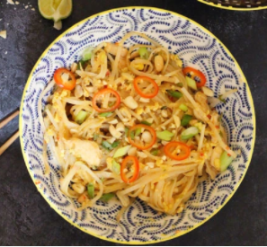

Chicken Pad Thai

Preparation time: 30mins
Ingredients
- 150g dried flat rice noodles
- 4 tbsp sunflower oil
- 2 garlic cloves , crushed
- 1 red chilli , finely chopped
- 2 chicken breasts, sliced finely sliced
- ½ small pack coriander , leaves picked, and stalks finely chopped
- 60g spring onions , shredded (reserving some to serve)
- 2 tbsp chopped pickled turnip (optional)
- 50ml chicken stock
- 100g beansprouts
- 2 eggs
- 60g roasted unsalted peanuts , chopped
- soy sauce , to serve
- fresh red chilli , sliced, to serve (optional)
Instructions
-
Soak the noodles in warm water for about 20 mins or until al dente, then
drain. Meanwhile, make the sauce by mixing together the tamarind paste,
fish sauce, sugar, lime and siracha until smooth.
-
Heat half the oil in a frying pan or a wok over a medium heat. Add the
garlic and chilli and fry for 30 seconds until fragrant. Tip in the
chicken and cook for 5 mins until golden. Add the coriander stalks,
spring onions and turnip (if using), and fry for 1 min. Add in the
soaked noodles, 50ml of the chicken stock and the prepared sauce. Keep
stir-frying the noodles until they’re starting to dry, then add the
sauce. Stir everything together and cook over a high heat for 3 mins
until the noodles are just cooked. Add a splash more water if needed.
-
When the sauce has reduced, scatter over the beansprouts and fold them
into the noodles. Push everything to one side of the pan, then pour in
the rest of the oil on the empty side and crack in the eggs. Fry for 2
mins until the white is just set and beginning to crisp around the
edges, then roughly scramble the runny yolks in with the whites. When
the eggs have just set, combine with the noodles.
-
Scatter over half of the peanuts and quickly toss together. Divide
between two plates with the remaining peanuts and spring onion, the lime
wedges and soy sauce on the side.
Main Page